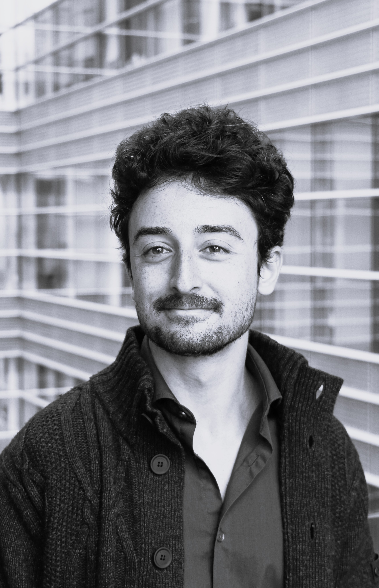

Claudio Costanzo
Postdoctoral researcher at the Faculty of Economics and Business, KU Leuven.
PhD in Economics, ECARES, Université libre de Bruxelles.
Download CV (PDF)Research
Job Market Paper
Industrial Automation, Earnings Parity, and Intra-Household Labor Supply
Publications
Robots, Jobs, and Optimal Fertility Timing
★ Kuznets Prize 2026 — best paper in J. Popul. Econ. 2025
Working Papers
AI Adoption, Local Labour Demand, and Marriage
Early Retirement as Insurance against Automation: Evidence from Italian Couples
Work in Progress
AI, the Market for News, and Polarization
Generative AI, Beliefs, and Household Saving
Algorithmic Feeds and Perceived Polarization
Teaching
TA · Graduate Econometrics II
Contact
OfficeJoint Research Center, Rue du Champ de Mars 21 (Office 04/053), 1050 Bruxelles, Belgium